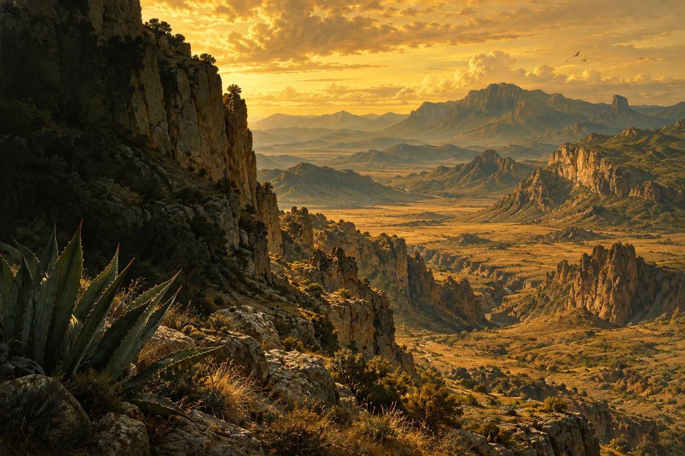
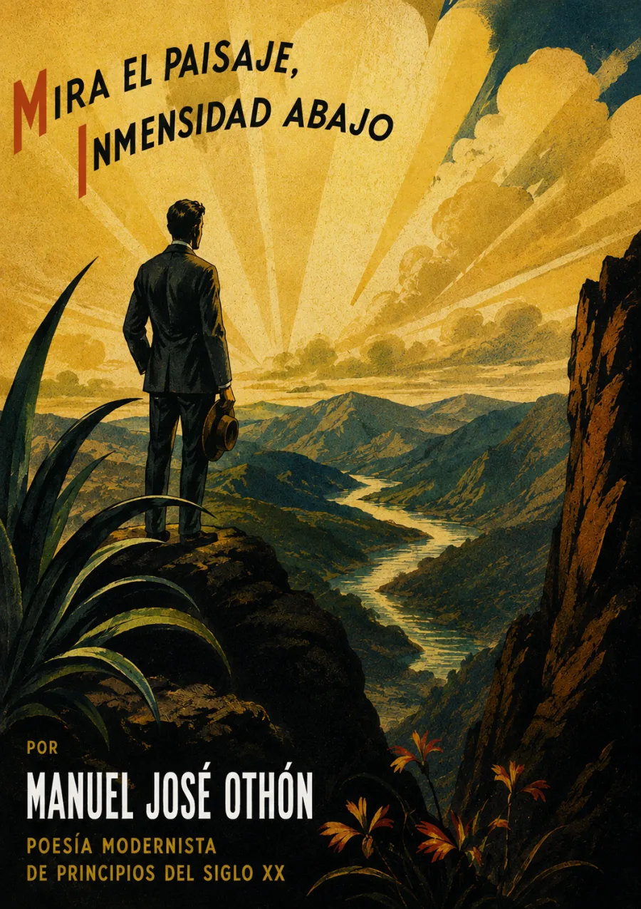

Audiolibros · Cuarta Ola
Mira el paisaje,
inmensidad
abajo
Manuel José Othón · Idilio salvaje, soneto II
Publicación en Revista Moderna de México: 1907
La inmensidad también pesa.
La sierra se abre. El aire arde.
Entre la roca y el cielo, el silencio
adquiere una escala sobrehumana.

Escuchar la escala del silencio.
Volumen

Una geografía del estremecimiento
El imperativo inicial nos obliga a mirar. La repetición de la inmensidad borra los límites entre lo que se abre bajo los pies y lo que domina desde arriba. No hay un camino que ordene esa extensión: la roca fracturada y el calor convierten el panorama en una experiencia de desamparo.
El paisaje no sirve de fondo: impone su propia fuerza.
Las águilas parecen fijadas en el aire; el movimiento queda suspendido hasta el galope final de los berrendos. Proponemos escuchar ese contraste como la tensión del soneto: una quietud casi insoportable que la vida interrumpe, apenas.
Este título reproduce el comienzo del soneto II de En el desierto. Idilio salvaje. La edición digital de la UNAM, basada en las Obras completas de 1997, fecha el texto en 1904 y remite a su publicación en Revista Moderna de México, enero de 1907. Distinguimos esa fecha editorial de la fecha del texto. La ilustración interpreta su atmósfera; no identifica un paraje real.
La lectura
Soneto II
Una lectura continua de los catorce versos; no del ciclo completo. Grabación pendiente de incorporación.
Reseñas

Bueno